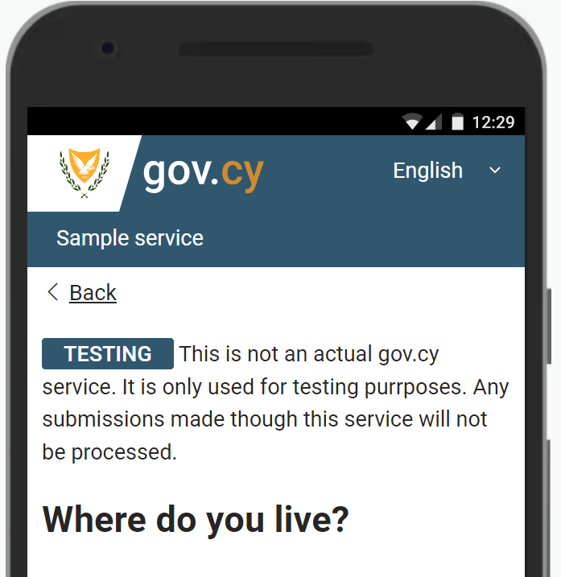

How to create new design elements using the gov.cy utility classes
In this article we will be looking at an actual example for developers, of how to use the gov.cy utility classes to create a brand new HTML design element. If you would like to see an example of building a page using the Design System library and other tools, see article How to create a page using the gov.cy design system.
The gov.cy Design System provides the basic components for creating digital service straight out of the box. These components may not be enough to build all services end to end, so the DSF team has created a library of CSS utility classes that apply unique styling and formatting to a group of HTML elements, that can be used to build new design elements, in the ‘gov.cy way’.
We will be looking at how to create a “Testing banner” to warn users when a service is built, and being tested, but not available for the public to start using. Our team has found from user research and consulting with testing partners during the discovery and design phases that there was a need for a design element with a “badge like” warning with the word “TESTING” and text explaining that this is a testing service, to be placed on the top of the main section of each page.
We start by creating a <div> container. In order to comply with the vertical spacing requirements of our design system we will assign the govcy-mb-4 class in our <div>.
<div class=" govcy-mb-4"></div>We can now create the ‘badge like’ element inside in our <div>. We can use a <span> inline container and assign the following classes to it:
govcy-br-2class to add a 2px border in our elementgovcy-br-primaryclass to set the primary colour for the bordergovcy-text-whiteclass to set the text to whitegovcy-rounded-1class to change the borders radiusgovcy-bg-primaryclass to set primary colour for the backgroundgovcy-px-3class to set the left and right padding to 3pxgovcy-fw-boldclass to set font weight of text to bold
We can now simply add the rest of the text inside the <div>.
Our code now looks like this:
<div class=" govcy-mb-4">
<span class="govcy-br-2 govcy-text-white govcy-br-primary govcy-rounded-1 govcy-bg-primary govcy-px-3 govcy-fw-bold">TESTING</span>
This is not an actual gov.cy service. It is only used for testing purposes. Any submissions made though this service will not be processed.
</div>Visually our element looks like this:
This is how the element looks like placed first inside the <main> container of an actual page:

This is it. We were able to easily create a new design element, aligned with the styles of gov.cy, meeting user needs, without writing any new styling code and this saves a lot of time.